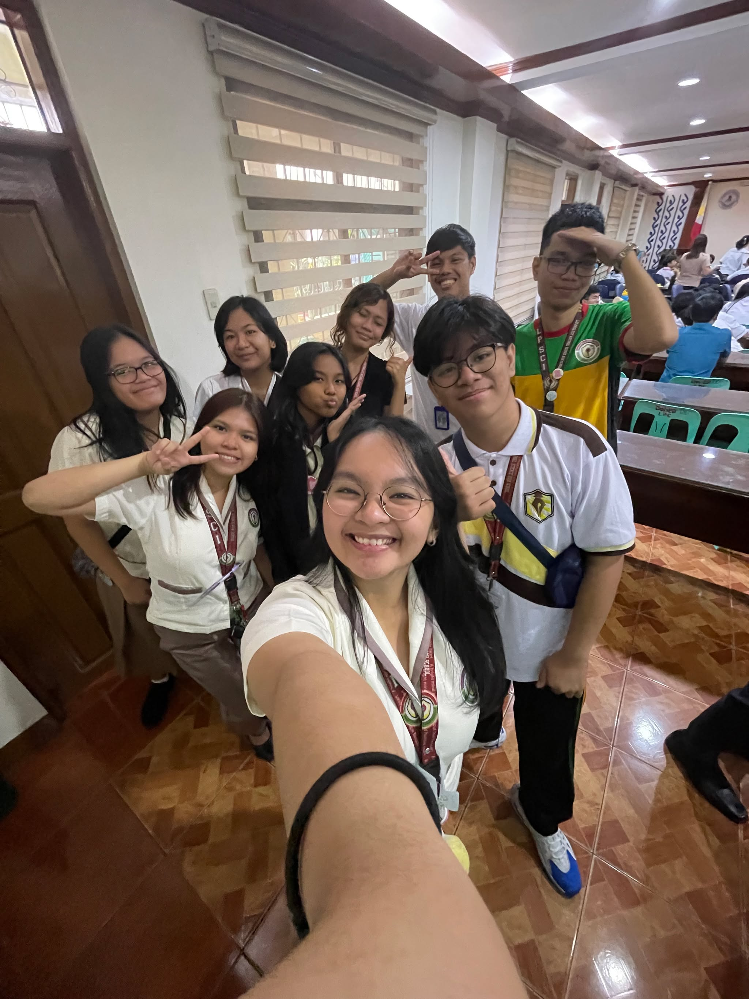

-

- 
Please keep zoom at 50-65%!
What is my full name?
INTRODUCTION
I think you probably know who I am now at this point. Since I last submitted my e-Portfolio, a lot has happened, some, I'm grateful for, some, not so much. I lost my fight to become AP club president, but I've been more fulfilled now than at any point in my life. I fell in love with journalism. I'm now one of the school's "experienced" journalists. I represented LPSci, and SDO-Las Pinas in the Division SPC and the Regional SPC as a Pagsulat ng Kolum writer, and I acted as COMEA student volunteer in this year's SSLG Elections. This school year may not have been perfect, but dang, was it good. All the experiences I've gained will further shape me into becoming a better person, this year, and hopefully, the succeeding years.
“¡Hindî dumáraing ang bayan, sa pagcá't waláng voces , hindî cumikilos sa pagca't hindî nacacaramdam sa mapanganib na pagtulog, at hindî nahihirapan, ang wicà po ninyó, sa pagca't hindî niyá nakikita cung paano ang pagdurugô ng canyáng púsò. ¡Ng̃uni't makikita't mariring̃ig isáng áraw at ¡sa abá ng̃ mg̃a lumiligaya sa pagdaráyà at sa gabí cung mang̃agsigawâ, dahil sa ang acálà nilá'y natutulog na lahát. ¡Pagca naliwanagan ng̃ sícat ng̃ áraw ang carumaldumal na anác ng̃ mg̃a cadilimán, cung magcágayo'y dárating ang cakilakilabot na pananag-úlì ng̃ ísìp, búbugsô at sasambulat ang hindî maulátang lacás na kinulóng sa lubháng mahábang panahón, ang napacaraming camandág na isaisang patác na sinálà, ang di masayod na mg̃a himutóc na linunod ...”
Nakanino nga ba talaga ang pag-asa ng susunod na salinlahi?
Marahil ang sagot ng karamihan ay nasa kamay ito ng mga nakaupong mambabatas sa ating mga kapulungan. Sa bagay, sila ang may kapangyarihan upang magpatupad ng mga kautusan at ng mga batas sa loob ng ating munting bayan. Gayunpaman, papaano kung maski silang mga inatasang ipagtanggol ang mga ordinansa ng ating bansa ay walang alam tungkol sa batas?
Kamakailan lamang, nag-ingay sa internet ang naging tugon ni senatorial aspirant Willie Revillame nang tanungin siya ng isang mamamahayag ukol sa kaniyang mga ipatutupad na batas. Sa halip kasi na sagutin nang diretsahan ni Revillame ang tanong, ibinalik pa niya sa reporter ang sarili nitong tanong, kesyo bilang mamamayan daw ng Pilipinas, ano ang suhestiyon nitong batas na gagawin niya sa sandaling maupo siya sa Senado. Pawang kahibangan! Tama pa ba ito?
Lubhang wala sa katuwiran ang ginawang pag-iwas ni Revillame sa tanong ng reporter. Bilang isang kandidato na hangad maluklok ng taumbayan, kaalaman at karunungan sa batas ang kinakailangan, hindi pamimigay ng jacket sa TV o anuman gaya ng nakasanayan ni ginoong Revillame. Paano ka lilikha ng ordinansang lulutas sa mga sistemikong isyu ng bansa kung ikaw mismo ay mangmang sa dakong iyon?
Sa ganang akin, wala namang masama kung hindi abogado ang tatakbo. Sa totoo lang, ang mga kandidatong kagaya nina Ka Daning Ramos, isang lider ng mga magsasaka, ay mas nararapat maupo sa puwesto kumpara sa mga abogadong walang pagbabagong nais ipatupad sa bayan. Gayunpaman, alam dapat ng mga kandidatong ito ang mga isyung pumapaligid sa sektor na kanilang nais ikatawan. Paano ka magiging mabisang mambabatas kung hindi mo alam ang mga isyung dapat agad solusyunan, hindi ba?
Isang mahalagang tanong ngayon ang lumilitaw – para saan ba tumatakbo itong mga kandidatong ito? Para ba sa ikauunlad ng bayan, o para lamang proteksyunan ang kanilang sariling mga interes? Maliban kay Willie Revillame, marami pang maanomalyang kandidato ang naglalaban-laban para maging isa sa mga kawani ng pamahalaan. Maging ang isang akusadong manghahalay at human trafficker ay tumatakbo rin nga para sa Senado!
Sa ganito kalalang hanay ng mga potensyal na bagong mambabatas, madaling mawalan ng pag-asa, tama ba? Gayunpaman, taliwas sa konsepto ng karamihan, hindi sila ang may hawak ng kinabukasan ng ating lahi, kundi tayong mga botante na nagluluklok sa kanila sa puwesto. Maaga pa lamang, kinakailangan na natin kilatisin ang bawat kandidato, dahil hindi lahat sa kanila ay mabuting intensyon para sa bayan. Tapat, matalino, at higit sa lahat, hindi kurakot na lingkod-bayan ang kailangan ng Pilipinas upang humakbang ito patungo sa kaunlaran.
Edukasyon ang pinakamabisang sandata nating taumbayan laban sa mga mangmang na mambabatas. Ika nga nila, takot ang qmga kurakot sa matalinong botante. Bakit? Dahil marunong magmatiyag ang isang matalinong mamamayan – marunong kumilatis, magsalita, at malayang tumuligsa. Habang maaga pa lamang, kinakailangan na nating mga mag-aaral tumindig para sa ikabubuti ng bayan, dahil sa susunod, tayo naman ang magiging botante.
Sabi nga nila, silang hindi batid ang kasaysayan ay siyang mapipilitan ulitin ang pagkakamali ng nakaraan. Naging saksi na ang ating lahi sa napakaraming paghihirap dahil sa mga pinunong makasarili. Hahayaan ba natin ang hinagpis ng panahong sasapit ay pareho din sa hinagpis ng panahong sumapit?